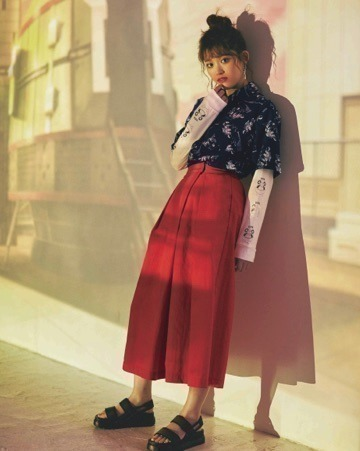
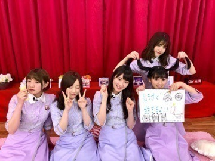

2018/0510Thuりんごもももも似たような感じっ(o・・o)
松村沙友理です
前回もビジュアルモデルをやらせて頂きました
ブランド「R4G」の第2弾は
『シュタインズ・ゲート ゼロ』です！
こちらのアイテムは発売中の
SHEL'TTER ＃46で予約できます！
ここから
ちゃんとした説明です↓
松村沙友理がビジュアルモデルを務めるファッションブランド「R4G」。
先日発表された「R4G×コードギアス反逆のルルーシュ」に続く第2弾として、4月から放送されているアニメ『シュタインズ・ゲート ゼロ』のアイテムが2018年5月7日発売の雑誌「SHEL'TTER ＃46」で予約を開始いたします。
です！
です！！
アイテムとしては
Tシャツやアロハシャツなど

カジュアルストリートなアイテムが中心になっていますが
男女問わず めっちゃ使えるアイテムです！
わたしも 撮影のときに
メンズのものを着用したりしました！！
これとか
今回もめっちゃお洒落です！！
凄いです。R4G
ちなみにですね、
販売のスケジュールとしては
一般予約が5月10日から
発売開始は
5月25日となっております！
予約・販売共にSHEL'TTER WEB STORE（https://www.ec-store.net）をみてくださいね～♡
R4Gの公式サイトや
SNSもよろしくお願いします！
撮影のオフショットや
アイテムの紹介がたくさんあります～☆
面白いです～☆
公式Webサイト：https://r4g.jp/
Twitter：@official_r4g
Instagram：official_r4g
明日はMステ～

ツインテールを表してるの、、、カナ？
またね～
2018/05/10 21:06
コメント(378)
今回はシュタゲとコラボか！
Mステ見ま〜す(*´∇｀*)
きっとツインテ表してるんだろうねw
Mステ見ま〜す(*´∇｀*)
きっとツインテ表してるんだろうねw
まちゅ＼(^o^)／お疲れ様でした
生ドルなどお疲れ様でした
ももが本当に可愛すぎるよね(*´ω｀*)
これからも頑張って(/･ω･)/
生ドルなどお疲れ様でした
ももが本当に可愛すぎるよね(*´ω｀*)
これからも頑張って(/･ω･)/
さゆりちゃーん
コメントお久しぶりです(*^｡^*)
モデルのまっちゅんは美しすぎて眩しい(-д☆)
ついついR4Gの雑誌があるときは、
必ず一番前の棚にしてます（笑）
明日のMステ楽しみにしてます(⁎˃ᴗ˂⁎）
コメントお久しぶりです(*^｡^*)
モデルのまっちゅんは美しすぎて眩しい(-д☆)
ついついR4Gの雑誌があるときは、
必ず一番前の棚にしてます（笑）
明日のMステ楽しみにしてます(⁎˃ᴗ˂⁎）
まっちゅんやほー！！！
Mステ楽しみ！！！
Mステ楽しみ！！！
お疲れさん
5/6の全握、オレンジTシャツを着て行きました！気づいてくれて嬉しかったです…。テンパってあんまりうまく反応出来なかったけど凄い嬉しかったです！シュタゲのも着てまた握手行きます！
そして昨日。生ドル。一生分の幸せ吸収しました…。可愛かったー！
今日はイマドキッで明日はMステで明後日は馬好王国があって、1週間の間にたくさんの松村さんを見れて嬉しいです。その分忙しいと思うので体に気をつけて頑張ってください！応援してまっちゅん！
そして昨日。生ドル。一生分の幸せ吸収しました…。可愛かったー！
今日はイマドキッで明日はMステで明後日は馬好王国があって、1週間の間にたくさんの松村さんを見れて嬉しいです。その分忙しいと思うので体に気をつけて頑張ってください！応援してまっちゅん！
こっちにもコメントしとこ(笑)
おいすー^^
生ドル観たで~結構長くしてたんやな
お疲れさん~
カメラ目線のは流石です! かなうものなし!
あとちょくちょく何つまんでたん?
それとR4Gの第二弾おめでと~
シュタインズ・ゲート ゼロ! シュタゲ!
ゲーム機で昔、
Xbox360版 『STEINS;GATE』
『STEINS;GATE 変移空間のオクテット』
『STEINS;GATE 線形拘束のフェノグラム』
『STEINS;GATE 比翼恋理のだーりん』
をplayしたで~
歌が耳に残っててな、、、
だーりん だりん だーりん ちゅっちゅっちゅ~♪ってやつ
え? 知らんて?
さよか（ ＾ω＾）
このままどんどんシリーズが続くとええな!
ほなね~ （ ＾ω＾）ノ~
あにめたまご2018「えんぎもん」を観ながら。
おいすー^^
生ドル観たで~結構長くしてたんやな
お疲れさん~
カメラ目線のは流石です! かなうものなし!
あとちょくちょく何つまんでたん?
それとR4Gの第二弾おめでと~
シュタインズ・ゲート ゼロ! シュタゲ!
ゲーム機で昔、
Xbox360版 『STEINS;GATE』
『STEINS;GATE 変移空間のオクテット』
『STEINS;GATE 線形拘束のフェノグラム』
『STEINS;GATE 比翼恋理のだーりん』
をplayしたで~
歌が耳に残っててな、、、
だーりん だりん だーりん ちゅっちゅっちゅ~♪ってやつ
え? 知らんて?
さよか（ ＾ω＾）
このままどんどんシリーズが続くとええな!
ほなね~ （ ＾ω＾）ノ~
あにめたまご2018「えんぎもん」を観ながら。
生ドルのみなみちゃんを占いなの？時照れてるまっちゅんがまじヤバい。かなりんも占って欲しかったわ
沙友理ちゃん更新有難う！！！
R4Gの沙友理ちゃんかっこよくてすき(இДஇ )
Mステ頑張れ！！
R4Gの沙友理ちゃんかっこよくてすき(இДஇ )
Mステ頑張れ！！
沙友理ちゃんブログ更新ありがとう！
R4Gはアロハシャツ予約したよ
また握手会で着ていくね
生ドルの感想は前のブログに書いたからええよね(笑)
明日はMステやな
それも楽しみにしてる
あと吉本坂もちゃんと見てるよ
おたけさん真面目やったな
だからその真面目なおたけさんに毎日投票してる(笑)
これからも目が離せないな
んじゃまたコメントするね！
R4Gはアロハシャツ予約したよ
また握手会で着ていくね
生ドルの感想は前のブログに書いたからええよね(笑)
明日はMステやな
それも楽しみにしてる
あと吉本坂もちゃんと見てるよ
おたけさん真面目やったな
だからその真面目なおたけさんに毎日投票してる(笑)
これからも目が離せないな
んじゃまたコメントするね！
まっちゅん〜♡
握手会にR4G着てる人多かったね！！
うちもアニメ全然分からんけど
まっちゅんのおかげで色々知った(∩˃o˂∩)
今週名古屋行きたかった〜会えない(;_;)
握手会にR4G着てる人多かったね！！
うちもアニメ全然分からんけど
まっちゅんのおかげで色々知った(∩˃o˂∩)
今週名古屋行きたかった〜会えない(;_;)
まっちゅんいつも応援してる
大好きだよ大好き
大好きだよ大好き
まじで大好き！ずっと応援してるよ！
久々にコメント致します。
>りんごもももも似たような感じっ(o・・o)
…ん？
「すももももももももの仲間」？
>りんごもももも似たような感じっ(o・・o)
…ん？
「すももももももももの仲間」？
まっちゅん！二日連続更新ありがとう
明日のMステ楽しみにしてるね
大好き！！！
明日のMステ楽しみにしてるね
大好き！！！
まちゅブログ更新ありがとう〜！！
まちゅもかわいいし、R4Gの服もかわいい、、、
生ドルも見たよ！かわいいが溢れてた〜(;_;)♡
今度はまちゅのツインテールも期待してます！
いつか握手会とかでやってね♡
まちゅもかわいいし、R4Gの服もかわいい、、、
生ドルも見たよ！かわいいが溢れてた〜(;_;)♡
今度はまちゅのツインテールも期待してます！
いつか握手会とかでやってね♡
まっちゅんのスタイルの良さにやられたわ（＾∇＾）
モデルさんだから当然だけど、まっちゅんはそれプラス可愛いし明るくて面白いから俺は好きだなぁ(^-^)
いつまでも変わらないまっちゅんでいてほしいよ（＾ν＾）
明日のMステでまっちゅんを探すからねー（＾∇＾）
モデルさんだから当然だけど、まっちゅんはそれプラス可愛いし明るくて面白いから俺は好きだなぁ(^-^)
いつまでも変わらないまっちゅんでいてほしいよ（＾ν＾）
明日のMステでまっちゅんを探すからねー（＾∇＾）
更新ありがとーう。
こんばんは！
中学二年生のとうとうです！
さすがまっちゅんおっしゃれー！
かっこいい！
すまん！
今日は少ししか書けない！
これからも一人で抱え込まず無理しないで頑張ってね。
体調にも気をつけて。
ずっっっっっと応援しています！
もしもこのコメントを読んでくれたならよければ名前を憶えていてください。お願いします！
こんばんは！
中学二年生のとうとうです！
さすがまっちゅんおっしゃれー！
かっこいい！
すまん！
今日は少ししか書けない！
これからも一人で抱え込まず無理しないで頑張ってね。
体調にも気をつけて。
ずっっっっっと応援しています！
もしもこのコメントを読んでくれたならよければ名前を憶えていてください。お願いします！
Mステ楽しみ
まっちゅんオシャレ〜
Mステ楽しみにしてます！頑張ってくださいねｐ(*^-^*)ｑ♪
Mステ楽しみにしてます！頑張ってくださいねｐ(*^-^*)ｑ♪
R4G第2弾チェック済みなんよ～*\(^o^)/*
今回も良くお似合いで、流石スーパーモデルさん*\(^o^)/*
りんごとももこのハイヒールコンビも良い感じやね*\(^o^)/*
昨日の生ドルも楽しくて今日も１日幸せでした*\(^o^)/*
明日もMステ楽しみやしほんまに毎日幸せや*\(^o^)/*
今回も良くお似合いで、流石スーパーモデルさん*\(^o^)/*
りんごとももこのハイヒールコンビも良い感じやね*\(^o^)/*
昨日の生ドルも楽しくて今日も１日幸せでした*\(^o^)/*
明日もMステ楽しみやしほんまに毎日幸せや*\(^o^)/*
ぐぉー…シュタゲ見よう見よう思って
見てないんや……。
これを機にシュタゲ見ようか(*´Д｀*)！
見てないんや……。
これを機にシュタゲ見ようか(*´Д｀*)！
さゆりちゃん、こんばんは。
昨日の生ドルとても面白かったよ！
今月2回あるみたいだから次回も楽しみ！
昨日の生ドルとても面白かったよ！
今月2回あるみたいだから次回も楽しみ！
さゆりんごブログ更新ありがとう！！
シュタゲとのコラボ楽しみ！
大好きなシュタゲと、最高に可愛い大好きなさゆりんごがコラボとか買うしかない！！
次のブログも楽しみに待ってるね！(*´∀`)♪
シュタゲとのコラボ楽しみ！
大好きなシュタゲと、最高に可愛い大好きなさゆりんごがコラボとか買うしかない！！
次のブログも楽しみに待ってるね！(*´∀`)♪
まっちゅんお疲れ様！
写真カッコ良すぎやわw
これからも健康気をつけて頑張ってください！
明日のMステ絶対見ます‼︎
写真カッコ良すぎやわw
これからも健康気をつけて頑張ってください！
明日のMステ絶対見ます‼︎
さゆりん
こんばんごっ♪
SHEL'TTER見たよー
今度はシュタゲやねー
思ったよりも使いやすいラインナップだったねっ
うーん、どれにするか迷うわぁ～
昨日は生ドルお疲れ様！
5周年、すごいねー
昨日もホント楽しそうだったねー
もうそれを見てるだけで幸せよぉ
これからもさゆりんと花奈ちゃんの生ドル、楽しみにしてるよっ！
明日のMステ、みんなで出れるんだねっ
すごく嬉しいねっ
目一杯楽しんで来てねっ
ほな、またねー
こんばんごっ♪
SHEL'TTER見たよー
今度はシュタゲやねー
思ったよりも使いやすいラインナップだったねっ
うーん、どれにするか迷うわぁ～
昨日は生ドルお疲れ様！
5周年、すごいねー
昨日もホント楽しそうだったねー
もうそれを見てるだけで幸せよぉ
これからもさゆりんと花奈ちゃんの生ドル、楽しみにしてるよっ！
明日のMステ、みんなで出れるんだねっ
すごく嬉しいねっ
目一杯楽しんで来てねっ
ほな、またねー
松村さん…
お友達までまっちゅんのこと大好きになっちゃいました！！
もっともっと活躍してくださいね～～～～！！
お友達までまっちゅんのこと大好きになっちゃいました！！
もっともっと活躍してくださいね～～～～！！
めっちゃすきやで
可愛いー
まちゅ〜！R4Gの服買うことに決めたよ！！
12日の握手会には間に合わないから次行けるイベントあったら着てくね！名古屋全握楽しみにしてます！さゆりんのうちわ持ってくから見つけてね〜！
12日の握手会には間に合わないから次行けるイベントあったら着てくね！名古屋全握楽しみにしてます！さゆりんのうちわ持ってくから見つけてね〜！
好きだー！！！
生駒ちゃん卒業後初Mステやね！
まちゅに顔認知された
まちゅに顔認知された
さゆりん！ブログ更新ありがとう！！！
やっぱりモデルさゆりんかっこいい！！！アイドルとは違ってすっごくかっこよく見える！！大好き！！！
生ドル見たよ！今回もめっちゃ良かった！
桃ちゃんとの絡みも多くて嬉しい！
次の更新も待ってるね！！
やっぱりモデルさゆりんかっこいい！！！アイドルとは違ってすっごくかっこよく見える！！大好き！！！
生ドル見たよ！今回もめっちゃ良かった！
桃ちゃんとの絡みも多くて嬉しい！
次の更新も待ってるね！！
さゆりん、ブログ更新ありがとうございまっちゅ〜〜ん
先日は名古屋個握に幕張全握とお疲れ様でした
久しぶりにさゆりんに会えてたくさん元気もらえました
本当にありがとう
吉本坂
東野さんやクイズ王さんとも息が合って楽しい番組になってきましたね
まだ吉本坂自体どうなるかまったく読めませんが
馬好王国
乃木坂工事中などとは違う衣装に毎回癒されています
番組の流れを読んでいるのか毎回見事な本命馬指名でびっくりです
レインボーラインは見事優勝しましたし、馬名だけで選んだだろー ってこともあったし、さんざん周りの皆さんが必死にプレゼンして結局一番人気馬かーい
ってこともあったし、さんざん周りの皆さんが必死にプレゼンして結局一番人気馬かーい ってこともあったり
ってこともあったり
さゆりんやっぱ天才
SNSポリス
大金もち子ちゃん可愛い
共演の山里さんもデレデレなのがわかります
SNSに疎い自分はさゆりんいなくても毎回とても楽しませてもらってます
そんな番組にさゆりんがでてるってのは本当に嬉しいです
さらにモデルやラジオなど色々な場面で活躍してるさゆりんにたくさん楽しませてもらっています
本当に今一番応援していて楽しいアイドルの一人だと思います
なんか聞いてるだけでめっちゃ忙しいのもわかります
大変だと思いますが体調に気をつけて楽しんでくださいね
ほいじゃ
まったね〜〜( ^_^)/~~~
先日は名古屋個握に幕張全握とお疲れ様でした
久しぶりにさゆりんに会えてたくさん元気もらえました
本当にありがとう
吉本坂
東野さんやクイズ王さんとも息が合って楽しい番組になってきましたね
まだ吉本坂自体どうなるかまったく読めませんが
馬好王国
乃木坂工事中などとは違う衣装に毎回癒されています
番組の流れを読んでいるのか毎回見事な本命馬指名でびっくりです
レインボーラインは見事優勝しましたし、馬名だけで選んだだろー
さゆりんやっぱ天才
SNSポリス
大金もち子ちゃん可愛い
共演の山里さんもデレデレなのがわかります
SNSに疎い自分はさゆりんいなくても毎回とても楽しませてもらってます
そんな番組にさゆりんがでてるってのは本当に嬉しいです
さらにモデルやラジオなど色々な場面で活躍してるさゆりんにたくさん楽しませてもらっています
本当に今一番応援していて楽しいアイドルの一人だと思います
なんか聞いてるだけでめっちゃ忙しいのもわかります
大変だと思いますが体調に気をつけて楽しんでくださいね
ほいじゃ
まったね〜〜( ^_^)/~~~
どんな服も似合うさゆりちゃんさすがだよ〜
明日のMステも楽しみにしてるね♡
明後日名古屋行くよ（＾Ｏ＾）全握大阪ぶり！
明日のMステも楽しみにしてるね♡
明後日名古屋行くよ（＾Ｏ＾）全握大阪ぶり！
買おうかしら
髪だいぶのびたの、、カナ？
明日のMステ楽しみにしています
モデルの仕事にアイドル業更には声優業と忙しいとは思いますが、体には気をつけて頑張って下さい(*´ω｀*)
まっちゅんの笑顔に癒されながら僕も仕事頑張ります(*^^*)
モデルの仕事にアイドル業更には声優業と忙しいとは思いますが、体には気をつけて頑張って下さい(*´ω｀*)
まっちゅんの笑顔に癒されながら僕も仕事頑張ります(*^^*)
まっちゅんこんばんは！
ブログ更新ありがとう！！
R4Gのビジュアルモデルの第2弾おめでとう！
今回もおしゃれな感じだね。チェックしますね＾＾
モデルのまっちゅんがすごく活躍して嬉しいです
この前の握手会に行かせて頂きました。
可愛いまっちゅんに会えて本当に嬉しかったです＾＾
忙しいのに笑顔も多くて楽しかったです！
昨日の生ドルも観ましたよ！生ドル5周年おめでとう！
かなりんと2人で頑張ってきた成果だね＾＾
昨日もメンバーとの楽しい配信見れて良かったです。
カメラ目線のまっちゅんを見てニヤニヤしちゃいました笑
明日のMステ頑張ってね
忙しいとは思いますが、体調に気をつけてね
ブログ更新ありがとう！！
R4Gのビジュアルモデルの第2弾おめでとう！
今回もおしゃれな感じだね。チェックしますね＾＾
モデルのまっちゅんがすごく活躍して嬉しいです
この前の握手会に行かせて頂きました。
可愛いまっちゅんに会えて本当に嬉しかったです＾＾
忙しいのに笑顔も多くて楽しかったです！
昨日の生ドルも観ましたよ！生ドル5周年おめでとう！
かなりんと2人で頑張ってきた成果だね＾＾
昨日もメンバーとの楽しい配信見れて良かったです。
カメラ目線のまっちゅんを見てニヤニヤしちゃいました笑
明日のMステ頑張ってね
忙しいとは思いますが、体調に気をつけてね
可愛い！！！！

まっつん
可愛いまっつんが大好きだよ❤️
大好きだよ〜！
明日のMステ絶対見るよ！
楽しみにしてるね
大好き〜
可愛いまっつんが大好きだよ❤️
大好きだよ〜！
明日のMステ絶対見るよ！
楽しみにしてるね
大好き〜
生ドルお疲れ様でした！！めっちゃ可愛くて癒されました♡
さゆりん！
ブログ更新ありがとう
Mステ絶対見るよー！
さゆまい最高！ツーショット見たいよー
ブログ更新ありがとう
Mステ絶対見るよー！
さゆまい最高！ツーショット見たいよー
シュタゲもコードギアスもめっちゃ面白いアニメやできてみたい！！さゆりちゃんみたいに似合うか分からんけど、買う！！
ブログ更新ありがとう。
R4Gの服いいですねー
チェックしてみますね。
明日Mステでしたね。
生駒さんのいない初Mステですね。
楽しみにしてます。
沙友理さんの明日が幸せで溢れた１日になりますように。
では、またね(^-^)/
R4Gの服いいですねー
チェックしてみますね。
明日Mステでしたね。
生駒さんのいない初Mステですね。
楽しみにしてます。
沙友理さんの明日が幸せで溢れた１日になりますように。
では、またね(^-^)/
ブログありがとう！
相変わらずかわいいな
R4Gさんの服、また買って、握手会に着ていくね！
相変わらずかわいいな
R4Gさんの服、また買って、握手会に着ていくね！
やばい！
１枚目と２枚目の写真の違いがよくわからないですー。
疲れているのかなぁ。
(^◇^;)
１枚目と２枚目の写真の違いがよくわからないですー。
疲れているのかなぁ。
(^◇^;)
握手会行ったよ！
やっぱり可愛い
頑張ってください
やっぱり可愛い
頑張ってください
Mステ見るよ！
明日のMステ頑張ってください！


りりあんとのコンビもいいけど、ももとのコンビもいいっ！